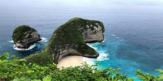
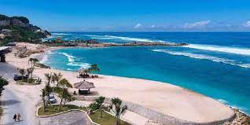
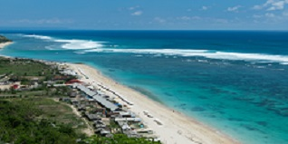

Tentang Cans Tour and Travel
Cans Tour and Travel dibuat sejak tahun 2019 yang berdomisili di Surabaya. Sudah 4 tahun kami bergerak dibidang travel ini Tim kami yang berada di kota-kota besar contohnya Surabaya, Jogja, Bandung, Bali, Jakarta dan tentunya sudah berpengalaman dan dibekali ilmu adventure dan berbagai armada yang kami sediakan dan sangat nyaman sekali, ini membuat kami yakin bisa memberikan terbaik untuk perjalanan liburan kalian.
Berbagai macam paket-paket travel yang kami tawarkan kepada kalian yang tentunya dengan harga terjangkau dan fasilitas yang mewah disetiap paket travelnya. Karena kami ingin dikenal orang karena testimoni postif dari para pelanggan kami yang pernah menggunakan jasa travel kami.
Tujuan
Memberikan pelayanan terbaik kepada customer dan tentunya dengan fasilitas yang mewah dan armada yang memadai.
Keunggulan Kami
- Low Price
Dapatkan harga paket wisata termurah disini
- Professional
Kami memiliki tim yang professional yang berada di kota-kota besar.
- Experiences
Berpengalaman lebih dari 4 tahun melayani ribuan customer.
Destinasi Wisata
Berikut Kami menawarkan destinasi wisata yang bisa kalian pilih.
Kelingking Beach, Nusa Penida

Deskripsi :
Pantai Kelingking berada di Bunga Mekar, Nusa Penida, Klungkung. Dinamai demikian, karena di pantai tersebut ada sebentuk karang yang bentuknya menyerupai jari kelingking. Walaupun demikian, ada juga yang menyebut tebing Paluang di Pantai Kelingking menyerupai leher Tyrannosaurus atau T-Rex. Itulah Tebing Paluang yang menjadi ciri khas Pantai Kelingking. Nama Paluang diberikan sesuai nama pura yang ada di dekat sana. Buat menyaksikan tebing ini dari titik terbaik, wisatawan perlu menyusuri anak tangga kayu yang cukup menguras energi.
Melasti Beach, Bali

Deskripsi :
Pantai Melasti adalah salah satu pantai yang sangat eksotis karena lokasinya sangat tersembunyi dan berada di balik tebing dan memiliki cerita sejarah yang hampir sama dengan pantai pandawa. Lokasi pantai melasti yang berada di balik bukit kapur yang menjulang tinggi sehingga untuk mencapai para pengunjung harus melewati dinding tebing kapur yang begitu mempesona hingga sampai bibir pantai yang berpasir puth nan eksotis yang di lengkapi dengan kolam kolam kecil bagaikan kolam alami. Karena lokasinya terisolasi maka menjadikan pantai Melasti ini masih belum banyak diketahui oleh wisatawan. Namun bedanya setelah terbukanya akses jalan masuk menuju lokasi pantai sehingga saat ini bisa lewati oleh kendaraan seperti mobil dengan membelah bukit tebih karang yang menjadikan daya tarik Pantai Melasti ini luar biasa tidak kalah dengan Pantai Pandawa.
Pandawa Beach, Bali

Deskripsi :
Pantai Pandawa adalah salah satu kawasan wisata di area Kuta Selatan, Kapubaten Bandung, Bali. Pantai ini terletak di balik perbukitan dan sering disebut sebagai Pantai Rahasia (Secret Beach). Di sekitar pantai ini terdapat dua tebing yang sangat besar dan dihiasi dengan patung Pandawa Lima di bagian dinding tebing karst.Patung Pandawa dari cerita Mahabarata tersebut mencakup Yudisthira / Dharmawangsa, Bima, Arjuna, Nakula, Sadewa.Lalu, apa yang ditawarkan pantai Pandawa hingga layak dikunjungi? Sejak memasuki kawasan wisata ini, mata kita akan dibuat terbelalak oleh indahnya pemandangan tebing dipapas tegak, sebagian berundak, di kanan-kiri jalan. Sekitar 1,5 km jalan menuju pantai ini dipagari tebing-tebing kapur yang menjulang tinggi.
Pilihan Paket Wisata Yang Kami Tawarkan
Paket ke-Bali 3Day 2Night
Bali adalah suatu pulau yang memiliki banyak sekali tempat wisata yang sudah di akui oleh dunia karena kecantikannya. Selain tempat wisata, keberagaman budaya di bali yang sangat kental membuat pulau bali sering kali jadi destinasi wisata terfavorit.
Tujuan
- Pandawa Beach
- Melasti Beach
- Krisna Pusat Oleh-Oleh
- Kuta Beach
- Tanah Lot Beach
- Sukawati Art Market
Fasilitas
- Bus
- Makan 3x sehari
- Hotel Bintang 4
- snack dan minuman
- dokumentasi selama liburan
Harga Paket Bali 3Day 2Night :
Rp. 1.100.000/orang
Paket ke-Jogja 2Day 1Night
Yogyakarta juga merupakan Ibukota Daerah Istimewa Yogyakarta di Jawa yang terkenal dengan Istana Sultan Yogyakarta atau Keraton Yogyakarta dimana keluarga Sultan masih tinggal di istana tersebut sampai sekarang . Istana ini juga terbuka untuk umum tetapi tidak semua bangunan, hanya beberapa bagian bangunan yang bisa dilihat oleh masyarakat. Banyak bagian dari kota ini juga dihiasi dengan sentuhan budaya Jawa di mana orang tidak akan pernah melupakannya dan selalu ingat karakteristik yang ada. Ornamen-ornamen khas Jawa dapat kita temui di lampu-lampu jalananan , di bangunan atau gedung-gedung di sepanjang jalan dan lain-lain yang membuat kota ini menjadi unik dan cantik. Itulah mengapa kota ini disebut Culture City.
Tujuan
- Malioboro
- Pasar Beringharjo
- Museum Vredeburg
- Taman Sari
- Pantai Parangtritis
- Puncak Becici
Fasilitas
- Bus
- Makan 3x sehari
- Hotel Bintang 3
- snack dan minuman
- dokumentasi selama liburan
Harga Paket Jogja 2Day 1Night :
Rp. 800.000/orang
Noted : *Silahkan Hubungi Admin Jika Ada Request Destinasi Wisata